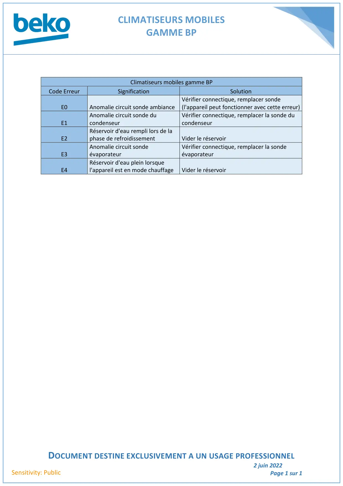

Codes erreur climatiseur gamme BP

CLIMATISEURS MOBILESGAMME BPDOCUMENT DESTINE EXCLUSIVEMENT A UN USAGE PROFESSIONNEL2 juin 2022Page 1 sur 1Sensitivity: PublicClimatiseurs mobiles gamme BPCode ErreurSignificationSolutionE0Anomalie circuit sonde ambianceVérifier connectique, remplacer sonde(l'appareil peut fonctionner avec cette erreur)E1Anomalie circuit sonde ducondenseurVérifier connectique, remplacer la sonde ducondenseurE2Réservoir d'eau rempli lors de laphase de refroidissementVider le réservoirE3Anomalie circuit sondeévaporateurVérifier connectique, remplacer la sondeévaporateurE4Réservoir d'eau plein lorsquel'appareil est en mode chauffageVider le réservoir
1 / 1